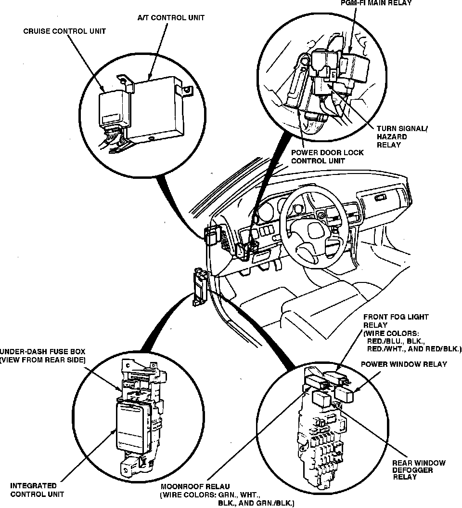

Operation CHARM
: Car repair manuals for everyone.
Home
>>
Acura
>>
1992
>>
Integra L4-1678cc 1.7L DOHC (VTEC) FI
>>
Repair and Diagnosis
>>
Lighting and Horns
>>
Fog/Driving Lamp
>>
Fog/Driving Lamp Relay
>>
Locations
Fog/Driving Lamp Relay: Locations
LH Instrument Panel Relays & Control Units:

Behind LH Side Of I/P, On Underdash Fuse Box